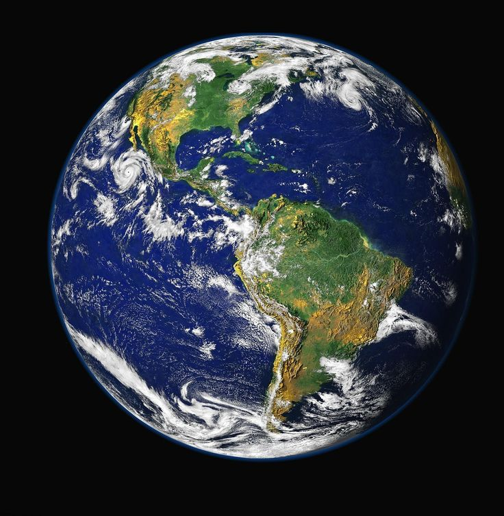

Earth is the third planet from the Sun and the fifth largest in the
solar system.
It is the only known planet to support life.
It is located in the "habitable zone," where temperatures and
conditions are ideal for the presence of liquid water, a vital
component for life.
Water covers about 71% of Earth's surface, earning it the nickname
"the Blue Planet," while land makes up the remaining 29%, comprising
mountains, plains, forests, and deserts.
The atmosphere is primarily composed of nitrogen (78%) and oxygen
(21%), with small amounts of other gases.
It protects the planet from harmful radiation and helps regulate its
temperature.
Earth rotates on its axis every 24 hours, causing the cycle of day
and night.
It completes a full orbit around the Sun in 365.25 days, resulting
in the four seasons.
The planet has a strong magnetic field, known as the
"magnetosphere," which shields it from solar winds and charged
particles.
Earth has one natural satellite, the Moon, which influences tides
and plays a significant role in stabilizing the planet's climate. br
With its vast biodiversity, abundant water, and moderate climate,
Earth is home to millions of living species, making it unique among
the planets in the solar system.
